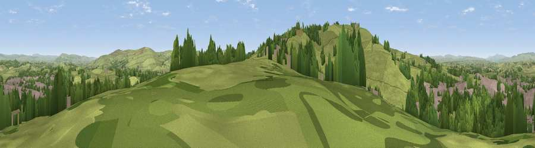

Viewpoint near Barnoldswick
#15049 in England · top 27% of its area beats it · near BarnoldswickWhere it is
The exact computed spot (SD 87812 45997). Click the marker for map links.
The view, rendered

A 360° render of this exact spot computed from the terrain model, tree cover and land cover — summer colours, afternoon light, calibrated against photographs of famous viewpoints. Real trees, hedges and buildings will differ in detail.
The panorama
Grey silhouette: terrain skyline in each direction (720 bearings, Earth curvature and refraction included). Dashed green: skyline with trees (+15 m) and buildings (+8 m) as obstacles. Blue strip: how far the ground is visible on each bearing.
Where the view opens
Wedge length = distance to the farthest visible ground on that bearing (vegetation-aware). Rings at 10, 25 and 50 km.
What fills the view
59% grassland · 21% built-up · 19% woodland ·
Angular shares of the visible panorama (visual magnitude), not map area. Landscape diversity 0.43 (0–1 Shannon).
Key numbers
More beautiful places nearby
The staircase of upgrades: each row has a higher view potential than everything closer. Driving times are estimates from straight-line distance, calibrated against real road routing — check an actual route before setting out.
| Place | Direction | Drive | Score |
|---|---|---|---|
| Viewpoint near Barnoldswick | SW · 1 km | ~4 min | 60.5 |
| Viewpoint near Barnoldswick | SW · 2 km | ~5 min | 62.1 |
| Weets Hill | WSW · 2 km | ~6 min | 69.3 |
| Viewpoint near Lothersdale | E · 7 km | ~14 min | 70.5 |
| Viewpoint near Barley | WSW · 8 km | ~17 min | 76.3 |
| Pendle Hill | WSW · 9 km | ~17 min | 76.5 |
| Viewpoint near Edenfield | SSW · 28 km | ~44 min | 77.5 |
| Little Ingleborough | NNW · 31 km | ~48 min | 78.8 |
53.90998, -2.18702 · source: osm viewpoint · position refined by local search. Computed location — check access rights before visiting.